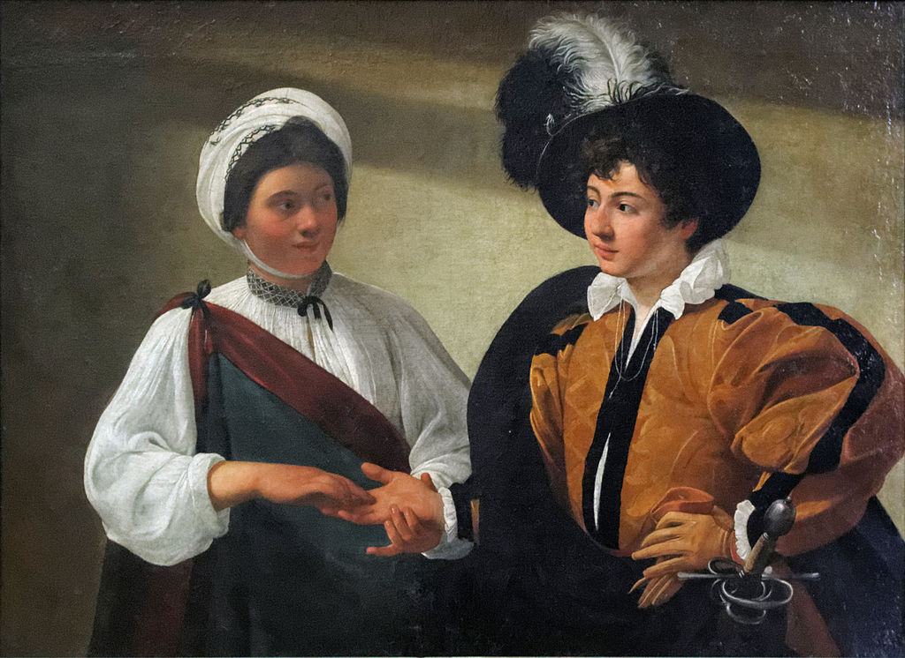

<head>
<meta charset="UTF-8" />
<meta name="keywords" content="drawing, painting" />
<meta name="description" content="drawings by Sunjy" />
<title>Sunjy</title>
<link rel="shortcut icon" type="image/x-icon" href="../../mImages/mCommon/favicon.ico" media="screen" />
<link rel="stylesheet" type="text/css" href="../../mCsses/mCommon/mCssA.css" />
<link rel="stylesheet" type="text/css" href="../../mCsses/mCommon/mCssB.css" />
<link rel="stylesheet" type="text/css" href="../../mCsses/mCommon/mCssC.css" />
<link rel="stylesheet" type="text/css" href="../../mCsses/mCommon/mCssD.css" />
<link rel="stylesheet" type="text/css" href="../../mCsses/mContent/mCssA.css" />
<link rel="stylesheet" type="text/css" href="../../mCsses/mContent/mCssB.css" />
<link rel="stylesheet" type="text/css" href="../../mCsses/mContent/mCssC.css" />
<link rel="stylesheet" type="text/css" href="../../mCsses/mContent/mCssD.css" />
</head>
<script type="text/javascript" src="../../mScripts/mContent/mContentAA.js" /></script>
<script type="text/javascript" src="../../mScripts/mContent/mContentAB.js" /></script>
<script type="text/javascript" src="../../mScripts/mContent/mContentAC.js" /></script>
<script type="text/javascript" src="../../mScripts/mContent/mContentAD.js" /></script>
<script type="text/javascript"></script> 
<script type="text/javascript">
document.write('<div class="mImgAbsolute"></div>');
/*
document.write('<p class="mFontSizeBColor" />From a white paper...</p>');
document.write('<table class="center"><tr><td>');
document.write('');
document.write('</td></tr></table>');
*/
</script>


<script type="text/javascript">
document.write('<p class="mFontSizeBColor" />The Fortune Teller</p>');
document.write('<p class="mFontSizeSColor" />“The Fortune Teller” by Caravaggio shows a pretentiously dressed boy, having his palm read by a gypsy girl. The boy looks with anticipation as he gazes into her face, and she returns his gaze.<br><br>The boy’s feathered hat, the gloves, and the oversized dagger immediately tell us that the boy is not sophisticated or experienced.<br><br>The gypsy girl with her light linen shirt and her exotic wrap is also intended to represent a “type” rather than as a real person.<br><br>The Italian Baroque artist, Caravaggio, painted two versions of this painting. The first in 1594 which is now in the Capitoline Museums in Rome and his second version in 1595, which is in the Louvre Museum, Paris.<br><br>In this second version, the light is more radiant, and the cloth of the boy’s doublet and the girl’s sleeves more finely textured.<br><br>The boy becomes more childlike and more innocently vulnerable, the girl less wary-looking, leaning in towards him, more in command of the situation.<br><br>Close inspection of the first version of this painting reveals what the young man has failed to notice that the girl is removing his ring as she gently strokes his hand.<br><br>In this second version, this sleight of hand is not as clear to the viewer but is assumed based on the previous version of the painting.<br></p>');
document.write('<table class="center" /><tr><td>');
document.write('<br>The boy’s feathered hat, the gloves, and the oversized dagger immediately tell us that the boy is not sophisticated or experienced.<br><br>The gypsy girl with her light linen shirt and her exotic wrap is also intended to represent a “type” rather than as a real person.<br><br>The Italian Baroque artist, Caravaggio, painted two versions of this painting. The first in 1594 which is now in the Capitoline Museums in Rome and his second version in 1595, which is in the Louvre Museum, Paris.<br><br>In this second version, the light is more radiant, and the cloth of the boy’s doublet and the girl’s sleeves more finely textured.<br><br>The boy becomes more childlike and more innocently vulnerable, the girl less wary-looking, leaning in towards him, more in command of the situation.<br><br>Close inspection of the first version of this painting reveals what the young man has failed to notice that the girl is removing his ring as she gently strokes his hand.<br><br>In this second version, this sleight of hand is not as clear to the viewer but is assumed based on the previous version of the painting.<br>" />');
document.write('</td></tr></table>');
</script>


